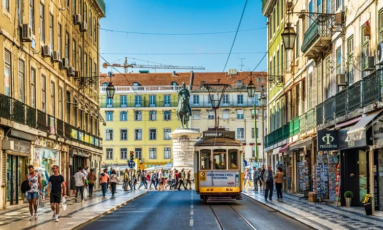
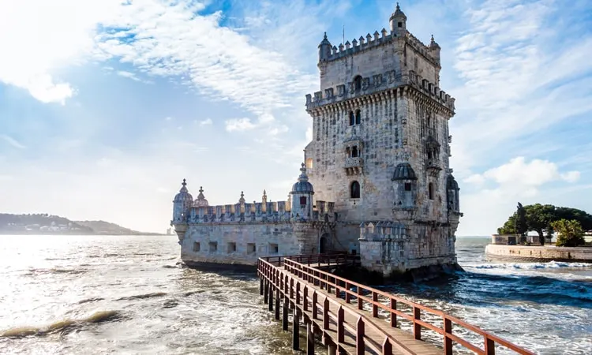
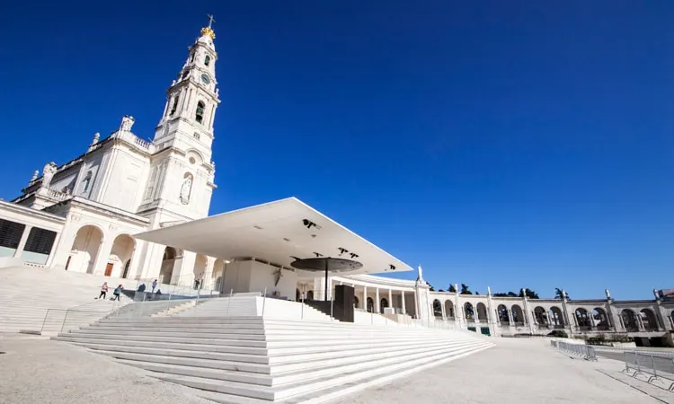
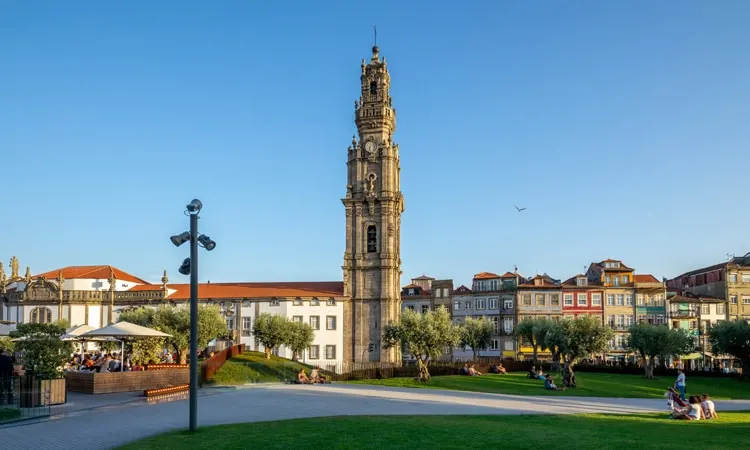
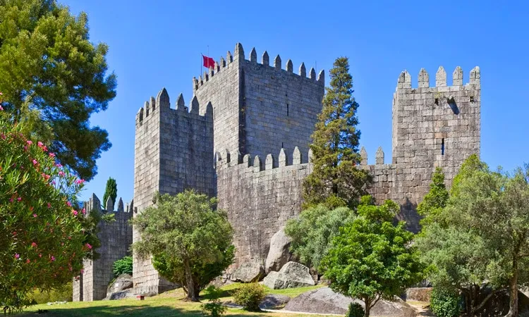

Turismo
Portugal é um excelente destino para visitar. Um país europeu, pequeno, mais barato que o restante da Europa e que é possível visitá-lo de norte a sul em poucos dias. Confira nesse texto as melhores dicas e um roteiro de 5 dias que preparámos para você fazer turismo em Portugal!
Custo do turismo em Portugal
Um dos maiores gastos será, com certeza, com as passagens aéreas para Portugal.
Em se tratando de hospedagem, há opções de turismo em Portugal para todos os bolsos, desde hostels com preços médios de 14,00€ por noite até hotéis de luxo por 1.600,00€ a diária. Tudo depende de quanto você pretende gastar na sua viagem.
Portugal é um dos países mais baratos da Europa para fazer refeições, o preço médio de um almoço é de 15,00€ (com entrada, prato principal, bebida, sobremesa e café).
Além das diversas opções de bons restaurantes, é possível ir até o supermercado mais próximo do seu hotel e comprar bons vinhos por 2,00€, queijos, azeitonas, além dos maravilhosos pães portugueses.
Uma estimativa média de gastos por dia na Europa é de 70,00€ com hospedagem, alimentação, atrações e transporte.
Roteiro de 5 dias em Portugal
Se você está planejando fazer turismo em Portugal, um roteiro de 5 dias pode ser o ideal (mas é claro, que se puder ficar mais tempo, coisas para fazer não faltam).
As atrações e escolhas de cada viajante dependem do estilo de vida e do que mais gostam de fazer. Mas, hoje, vamos dar dicas gerais para que você possa aproveitar sua estada e fazer turismo em Portugal.
1º dia
Chegada em Lisboa (capital do país), visita ao Castelo de São Jorge, subida pela freguesia de Alfama (onde estão as tradicionais casas de Fado).
Entretanto, faça uma visita à igreja de Santo Antônio (onde nasceu Santo Antônio), mirantes (miradouros) com vista para a Ponte 25 de Abril, Praça do Rossio e Praça do Comércio.
Termine o dia com uma caminhada com vista pelas margens do Rio Tejo.
2º dia
Visita à Torre de Belém, Padrão dos Descobrimentos, Mosteiro dos Jerónimos e à fábrica dos originais Pastéis de Belém. Passeio de carro até Cascais e almoço na praia.
À tarde, visita à vila de Sintra, ao Castelo dos Mouros e ao Palácio Nacional da Pena. Sintra é dos locais mais belos de Portugal, você deve visitar essa vila.
3º dia
Saída para Fátima, visita ao Santuário de Fátima e almoço na praia de Nazaré, a cidade das ondas gigantes (com temporada a partir de novembro).
À tarde, saída para Coimbra. Em Coimbra, você precisa conhecer a Biblioteca Joanina (na Universidade de Coimbra – uma das mais antigas do mundo ainda em funcionamento) e a Quinta das Lágrimas.
4º dia
Visita ao norte do país, chegada à cidade do Porto. Passeio pela Avenida dos Aliados, Livraria Lello e Irmão, Torre dos Clérigos, Estação de São Bento e Sé do Porto.
Travessia da Ponto Luis I, almoço em Vila Nova de Gaia na Ribeira do Rio Douro. A ponte é uma das pontes mais bonitas da Europa. Portanto, vale o passeio!
À tarde, passeio de barco e visita às Caves de Vinho do Porto. Finalizando o dia com uma deliciosa francesinha, prato típico da cidade.
5º dia
Visita à charmosa cidade de Guimarães. Passeio pelo centro histórico, muralha ‘Aqui Nasceu Portugal’, Castelo de Guimarães, Paço dos Duques, e almoço no Largo das Oliveiras.
À tarde, retorno para o Porto e voo para o próximo destino na Europa.